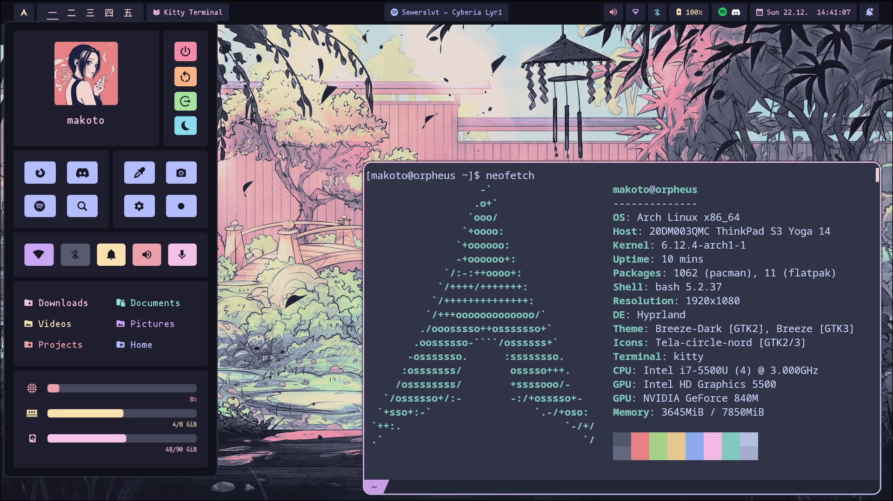
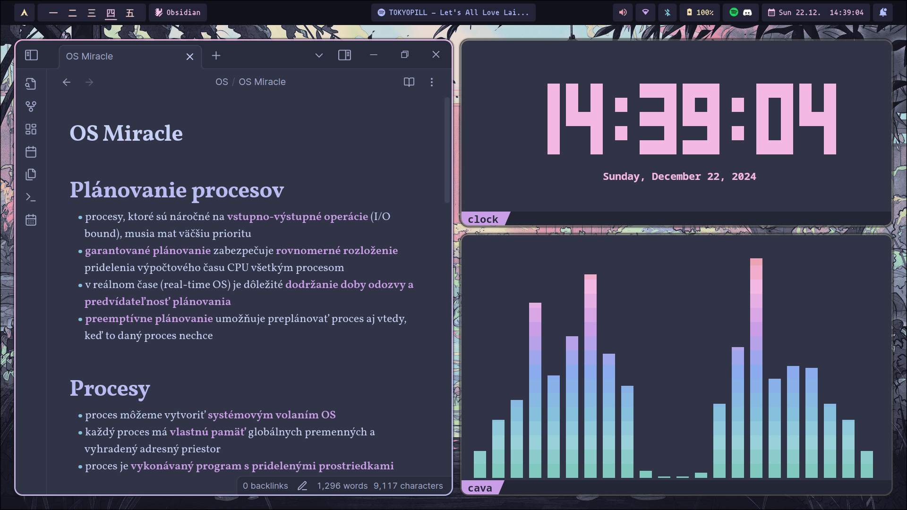

The main reason I had started using Arch Linux in the first place is the amount of customizability that distros which mainly use Gnome don't offer. I had gotten it mainly to try ricing, which took me about half a year to get to with all my university responsibilities and my lack of motivation. I had an idea that I wanted to make a pretty Catppuccin themed rice for a little while and after browsing r/UnixPorn and seeing this post, I started trying to make my own.
What is Hyprland? I hadn't the slightest idea but seeing that most posts on the aforementioned subreddit used Hyprland as their desktop enviroment, I wanted to do the same. To quote it's GitHub and save myself some brainpower trying to think of an explanation, "Hyprland is an independent, highly customizable, dynamic tiling Wayland compositor that doesn't sacrifice on its looks." It is a tiling window manager, which splits up your screen into tiles by default, as opposed to a floating window manager, which everyone is accustomed to, through Windows, MacOS, Gnome, KDE Plasma and such. This difference, as well as different controls through keybinds instead of using icons, takes a little to get used to but I haven't had issues for more than three days or so.
When I set my mind on using Hyprland, I was a little scared to commit to it fully before trying it out, because of my paranoia that Arch will break even if I look at it the wrong way. Thankfully, it's incredibly easy to test. You simply download Hyprland using yay for the newest version:
yay -S hyprland-git
Load into a different TTY using Ctrl+Alt+F2 (or F3 and so on...) and execute the hyprland command. You'll load a Hyprland session, while having your original session available on TTY1, and can try configuring anything you'd like without being scared of messing something up and being stuck. Well at least I had that fear.
A downside of Hyprland is that is is not very usable out of the box as opposed to KDE, but doing everything yourself is one of the wonders of Linux. An upside of Hyprland is that many of the programs you will use only need a .conf file to customize anything you need.
Arguably the most important part when using Linux. I've tried a few terminals on both Ubuntu Gnome and Arch KDE Plasma, however I've stayed with the default terminal on Hyprland, which is Kitty, for its simplicity and minimalist looks without any bars or buttons. Kitty's configuration file isn't in the hypr directory within the .config/ direcory within your user, but in its own one.
The most used wallpaper utility on Hyprland is Hyprpaper. I have chosen a nice looking wallpaper from this GitHub repo which hosts tons of Catppuccin themed wallpapers. Only thing I needed to do to set the wallpaper is write two lines in a .conf file and autoload Hyprpaper on startup.
There is no taskbar by default and you have to download one yourself. One that is used the most is Waybar but it's very basic and seemed like it'd need a lot of work to transform into something good looking. The Reddit post which inspired me referenced Hyprpanel, which provides a lot of visually appealing utilities out of the box, although at the cost of a lot of dependencies. It runs through AGSv1 at the moment, but as far as I'm aware, the developers are looking to migrate to a newer version of AGS.
I'm using Hyprshot with two keybindings, one for a screen selection and one for full screen.
As I've mentioned, my goal was to get as Catppuccined as possible, which is easy to achieve with their incredible catalogue of ports.
This is everywhere I used any kind of Catppuccin theming:
As for configurations, I've shared my dotfiles in this GitHub repo. If you simply clone them, they probably won't work, as some need to be in their own directory (like Kitty) or include paths that are relevant to only my system. I'm sharing those I have personally edited to my own liking, when it comes to themes, you can find everything you need to know in their own respective repos through the Catppuccin port catalogue or in through the above links
Some of the changes I've made to my hyprland.conf is new keybinds to switch workspaces and move windows through workspaces, scroll through workspaces using keybinds, screenshotting, window border colours, startup applications, and so on.
Currently, I don't lock whenever I sleep my laptop on Hyprland. I plan to use Hypridle to watch for when I'm idle and execute Hyprlock to lock me out. I'm also having issues with logging into the Eduroam Wi-Fi since the Hyprpanel Wi-Fi utility only allows for the password input and Eduroam needs both username and password. Currently I use:
nmcli dev wifi list sudo
nmcli dev --ask wifi connect [SSID found from previous command]
It's simple to write a script to automate this, but I've been too lazy.
Overall this was an extremely pleasurable experience. I found it very fun to figure everything out and customize everything to my own liking. This is the most customization I've seen from a desktop enviroment so I highly reccomend this to anyone who is interested in ricing.